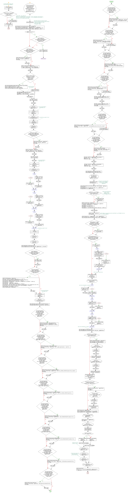

<a href="proc_CreateBaseTable2.png"></a>
-- drop table BASE_CMS_Class -- use KenticoCMS_DataMart_2 GO PRINT 'Executing proc_CreateBaseTable.sql'; GO IF EXISTS (SELECT name FROM sys.procedures WHERE name = 'proc_CreateBaseTable') BEGIN DROP PROCEDURE proc_CreateBaseTable; END; GO --KenticoCMS_1.dbo.COM_SKU -- EXEC proc_CreateBaseTable 'KenticoCMS_1', 'HFIT_Configuration_HACoaching', 0 -- EXEC proc_ChangeTracking 'KenticoCMS_1' , 'HFIT_Configuration_HACoaching' , 1; -- select top 100 * from BASE_CMS_USER CREATE PROCEDURE proc_CreateBaseTable ( @InstanceName AS NVARCHAR (200) , @TblName AS NVARCHAR (200) , @SkipIfExists AS BIT = 1 , @AddTableDefaults AS NVARCHAR (20) = 'NO') AS BEGIN SET NOCOUNT ON; -- Each table tracked for changes requires: -- 3 stored procedures to track and apply changes -- 3 Tables FACT/DIM/HIST (_DEL) -- 1 Hist Delete Trigger -- 1 Hist Update Trigger SET TRANSACTION ISOLATION LEVEL READ UNCOMMITTED; PRINT 'Inside proc_CreateBaseTable: ' + @InstanceName + ' / ' + @TblName; DECLARE @S AS NVARCHAR (2000) = '' , @BASETable AS NVARCHAR (100) = 'BASE_' + @TblName , @DelTable AS NVARCHAR (100) = 'BASE_' + @TblName + '_DEL'; IF @SkipIfExists = 1 BEGIN IF EXISTS (SELECT TABLE_NAME FROM INFORMATION_SCHEMA.TABLES WHERE TABLE_NAME = @BASETable) BEGIN PRINT 'Skipping Table Exists: ' + @BASETable; GOTO VERIFYCOLS; END; END; IF EXISTS (SELECT TABLE_NAME FROM INFORMATION_SCHEMA.TABLES WHERE TABLE_NAME = @BASETable) BEGIN PRINT 'REPLACING table: ' + @BASETable; SET @S = ' drop table ' + @BASETable; PRINT @s; EXEC (@S) ; END; PRINT 'Creating table: ' + @BASETable; SET @S = ' SELECT top 10 * INTO ' + @BASETable + ' FROM ' + @InstanceName + '.DBO.' + @TblName; EXEC (@S) ; IF EXISTS ( SELECT name FROM sys.key_constraints WHERE type = 'PK' AND OBJECT_NAME (parent_object_id) = @BASETable) BEGIN DECLARE @CNAME AS NVARCHAR (250) = (SELECT name FROM sys.key_constraints WHERE type = 'PK' AND OBJECT_NAME (parent_object_id) = @BASETable) ; PRINT 'EXISTING PRIMARY KEY FOUND: ' + @CNAME; -- Delete the primary key constraint. DECLARE @MySql AS NVARCHAR (MAX) = ''; SET @MySql = 'ALTER TABLE dbo.' + @BASETable + ' DROP CONSTRAINT ' + @CNAME; EXEC (@MySql) ; END; ELSE BEGIN PRINT 'NO EXISTING PRIMARY KEY FOUND'; END; SET @S = ' Truncate table ' + @BASETable; EXEC (@S) ; EXEC proc_RemoveIdentityCols @BASETable , 1; --********************************************************************** --Convert all DATETIME to DATETIME2 here PRINT '#1 proc_ConvertAllDatetimeToDatetime2 : ' + @BASETable; EXEC proc_ConvertAllDatetimeToDatetime2 @BASETable; --********************************************************************** --CONVERT ALL BIGINT TO INT PRINT '#1 proc_ConvertBigintToInt: ' + @BASETable; EXEC proc_ConvertBigintToInt @BASETable; --********************************************************************** VERIFYCOLS: IF EXISTS (SELECT TABLE_NAME FROM INFORMATION_SCHEMA.TABLES WHERE TABLE_NAME = @DelTable) BEGIN PRINT 'REPLACING table: ' + @DelTable; SET @S = ' drop table ' + @DelTable; PRINT @s; EXEC (@S) ; END; PRINT 'Creating table: ' + @DelTable; SET @S = ' SELECT top 1 * INTO ' + @DelTable + ' FROM ' + @InstanceName + '.DBO.' + @TblName; EXEC (@S) ; SET @S = ' Truncate table ' + @DelTable; EXEC (@S) ; --********************************************************************** --Convert all DATETIME to DATETIME2 here PRINT '#2 proc_ConvertAllDatetimeToDatetime2 : ' + @BASETable; EXEC proc_ConvertAllDatetimeToDatetime2 @DelTable; BEGIN TRY SET @S = ' Alter table ' + @DelTable + ' add Action char(1) null '; EXEC (@S) ; PRINT 'Added Action to ' + @DelTable; END TRY BEGIN CATCH PRINT 'Action exists in ' + @DelTable; END CATCH; BEGIN TRY SET @S = ' Alter table ' + @BASETable + ' add Action char(1) null '; EXEC (@S) ; PRINT 'Added Action to ' + @BASETable; END TRY BEGIN CATCH PRINT 'Action exists in ' + @BASETable; END CATCH; BEGIN TRY SET @S = ' Alter table ' + @DelTable + ' add ActionDate datetime2 default getdate() '; EXEC (@S) ; PRINT 'Added ActionDate to ' + @DelTable; END TRY BEGIN CATCH PRINT 'ActionDate exists in ' + @DelTable; END CATCH; --********************************************************************** --CONVERT ALL BIGINT TO INT PRINT '#2 proc_ConvertBigintToInt '; EXEC proc_ConvertBigintToInt @DelTable; --********************************************************************** EXEC proc_RemoveIdentityCols @DelTable; --********************************************************************** DECLARE @SQL AS NVARCHAR (100) = ''; DECLARE @ChgTable AS NVARCHAR (100) = @BASETable + '_CTVerHIST'; IF EXISTS (SELECT TABLE_NAME FROM INFORMATION_SCHEMA.TABLES WHERE TABLE_NAME = @ChgTable) BEGIN SET @SQL = 'drop table ' + @ChgTable; EXEC (@SQL) ; END; IF NOT EXISTS (SELECT TABLE_NAME FROM INFORMATION_SCHEMA.TABLES WHERE TABLE_NAME = @ChgTable) BEGIN PRINT 'CREATING table: ' + @ChgTable; SET @S = ' CREATE TABLE [dbo].[' + @ChgTable + ']( ' + CHAR (10) ; SET @S = @S + '[SYS_CHANGE_VERSION] [bigint] NOT NULL, ' + CHAR (10) ; SET @S = @S + '[DBMS] nvarchar(250) NOT NULL, ' + CHAR (10) ; SET @S = @S + 'CONSTRAINT [PK_' + @ChgTable + '] PRIMARY KEY CLUSTERED ' + CHAR (10) ; SET @S = @S + '( ' + CHAR (10) ; SET @S = @S + ' [DBMS] ASC ' + CHAR (10) ; SET @S = @S + ' ,[SYS_CHANGE_VERSION] ASC ' + CHAR (10) ; SET @S = @S + ')WITH (PAD_INDEX = OFF, STATISTICS_NORECOMPUTE = OFF, IGNORE_DUP_KEY = OFF, ALLOW_ROW_LOCKS = ON, ALLOW_PAGE_LOCKS = ON) ON [PRIMARY] ' + CHAR (10) ; SET @S = @S + ') ON [PRIMARY] ' + CHAR (10) ; PRINT 'CREATED table: ' + @ChgTable; EXEC (@S) ; END; --********************************************************************** --Convert all DATETIME to DATETIME2 here PRINT '#3 proc_ConvertAllDatetimeToDatetime2 : ' + @BASETable; EXEC proc_ConvertAllDatetimeToDatetime2 @ChgTable; --****************************************************************************** DECLARE @SurrogateKeyName AS NVARCHAR (100) = ''; SET @SurrogateKeyName = 'SurrogateKey_' + @TblName; IF NOT EXISTS (SELECT COLUMN_NAME FROM INFORMATION_SCHEMA.COLUMNS WHERE COLUMN_NAME = @SurrogateKeyName AND TABLE_NAME = @BASETable) BEGIN PRINT 'Adding Column ' + @SurrogateKeyName; SET @S = 'ALTER TABLE ' + @BASETable + ' ADD ' + @SurrogateKeyName + ' bigint identity (1,1) not NULL '; PRINT @s; EXEC (@S) ; END; IF NOT EXISTS (SELECT COLUMN_NAME FROM INFORMATION_SCHEMA.COLUMNS WHERE COLUMN_NAME = @SurrogateKeyName AND TABLE_NAME = @DelTable) BEGIN PRINT 'Adding Column ' + @SurrogateKeyName; SET @S = 'ALTER TABLE ' + @DelTable + ' ADD ' + @SurrogateKeyName + ' bigint NULL '; PRINT @s; EXEC (@S) ; END; --****************************************************************************** IF NOT EXISTS (SELECT COLUMN_NAME FROM INFORMATION_SCHEMA.COLUMNS WHERE COLUMN_NAME = 'SYS_CHANGE_VERSION' AND TABLE_NAME = @BASETable) BEGIN PRINT 'Adding Column SYS_CHANGE_VERSION'; SET @S = 'ALTER TABLE ' + @BASETable + ' ADD SYS_CHANGE_VERSION bigint not NULL default 0 '; PRINT @s; EXEC (@S) ; END; IF NOT EXISTS (SELECT COLUMN_NAME FROM INFORMATION_SCHEMA.COLUMNS WHERE COLUMN_NAME = 'SYS_CHANGE_VERSION' AND TABLE_NAME = @DelTable) BEGIN PRINT 'Adding Column SYS_CHANGE_VERSION'; SET @S = 'ALTER TABLE ' + @DelTable + ' ADD SYS_CHANGE_VERSION bigint NULL '; PRINT @s; EXEC (@S) ; END; IF NOT EXISTS (SELECT COLUMN_NAME FROM INFORMATION_SCHEMA.COLUMNS WHERE COLUMN_NAME = 'LastModifiedDate' AND TABLE_NAME = @BASETable) BEGIN PRINT 'Adding Column LastModifiedDate'; SET @S = 'ALTER TABLE ' + @BASETable + ' ADD LASTMODIFIEDDATE datetime2 NULL '; PRINT @s; EXEC (@S) ; END; IF NOT EXISTS (SELECT COLUMN_NAME FROM INFORMATION_SCHEMA.COLUMNS WHERE COLUMN_NAME = 'LastModifiedDate' AND TABLE_NAME = @DelTable) BEGIN PRINT 'Adding Column LastModifiedDate'; SET @S = 'ALTER TABLE ' + @DelTable + ' ADD LASTMODIFIEDDATE datetime2 NULL '; PRINT @s; EXEC (@S) ; END; IF NOT EXISTS (SELECT COLUMN_NAME FROM INFORMATION_SCHEMA.COLUMNS WHERE COLUMN_NAME = 'HashCode' AND TABLE_NAME = @BASETable) BEGIN PRINT 'Adding Column HashCode'; SET @S = 'ALTER TABLE ' + @BASETable + ' ADD HashCode nvarchar(75) NULL '; PRINT @s; EXEC (@S) ; END; IF NOT EXISTS (SELECT COLUMN_NAME FROM INFORMATION_SCHEMA.COLUMNS WHERE COLUMN_NAME = 'HashCode' AND TABLE_NAME = @DelTable) BEGIN PRINT 'Adding Column HashCode'; SET @S = 'ALTER TABLE ' + @DelTable + ' ADD HashCode nvarchar(75) NULL '; PRINT @s; EXEC (@S) ; END; IF NOT EXISTS (SELECT COLUMN_NAME FROM INFORMATION_SCHEMA.COLUMNS WHERE COLUMN_NAME = 'SVR' AND TABLE_NAME = @BASETable) BEGIN PRINT 'Adding Column SVR'; SET @S = 'ALTER TABLE ' + @BASETable + ' ADD SVR nvarchar (100) NOT NULL default @@SERVERNAME '; PRINT @s; EXEC (@S) ; END; IF NOT EXISTS (SELECT COLUMN_NAME FROM INFORMATION_SCHEMA.COLUMNS WHERE COLUMN_NAME = 'SVR' AND TABLE_NAME = @DelTable) BEGIN PRINT 'Adding Column SVR'; SET @S = 'ALTER TABLE ' + @DelTable + ' ADD SVR nvarchar (100) NOT NULL default @@SERVERNAME '; PRINT @s; EXEC (@S) ; END; ELSE BEGIN PRINT @DelTable + ' contains column DBNAME.'; END; IF NOT EXISTS (SELECT COLUMN_NAME FROM INFORMATION_SCHEMA.COLUMNS WHERE COLUMN_NAME = 'DBNAME' AND TABLE_NAME = @BASETable) BEGIN PRINT 'Adding Column DBNAME'; SET @S = 'ALTER TABLE ' + @BASETable + ' ADD DBNAME nvarchar (100) NOT NULL default DB_NAME() '; PRINT @s; EXEC (@S) ; END; IF NOT EXISTS (SELECT COLUMN_NAME FROM INFORMATION_SCHEMA.COLUMNS WHERE COLUMN_NAME = 'DBNAME' AND TABLE_NAME = @DelTable) BEGIN PRINT 'Adding Column DBNAME'; SET @S = 'ALTER TABLE ' + @DelTable + ' ADD DBNAME nvarchar (100) NOT NULL default DB_NAME() '; PRINT @s; EXEC (@S) ; END; ELSE BEGIN PRINT @DelTable + ' contains column DBNAME.'; END; SET @S = 'UPDATE ' + @BASETable + ' SET SVR = @@SERVERNAME where SVR is null '; PRINT @s; EXEC (@S) ; SET @S = 'UPDATE ' + @DelTable + ' SET SVR = @@SERVERNAME where SVR is null '; PRINT @s; EXEC (@S) ; IF NOT EXISTS (SELECT COLUMN_NAME FROM INFORMATION_SCHEMA.COLUMNS WHERE COLUMN_NAME = 'DBNAME' AND TABLE_NAME = @BASETable) BEGIN PRINT 'DOES not contain Column DBNAME'; SET @S = 'ALTER TABLE ' + @BASETable + ' ADD DBNAME nvarchar (100) not NULL default ''-'' '; PRINT @s; EXEC (@S) ; END; ELSE BEGIN PRINT @BASETable + ' contain column DBNAME.'; END; IF NOT EXISTS (SELECT COLUMN_NAME FROM INFORMATION_SCHEMA.COLUMNS WHERE COLUMN_NAME = 'DBNAME' AND TABLE_NAME = @DelTable) BEGIN PRINT 'Adding Column DBNAME'; SET @S = 'ALTER TABLE ' + @DelTable + ' ADD DBNAME nvarchar (100) not NULL default ''-'' '; PRINT @s; EXEC (@S) ; END; SET @S = 'UPDATE ' + @BASETable + ' SET DBNAME = ''' + @InstanceName + '''' + ' where DBNAME = ''-'' '; PRINT '001: ' + @s; EXEC (@S) ; SET @S = 'UPDATE ' + @DelTable + ' SET DBNAME = ''' + @InstanceName + '''' + ' where DBNAME = ''-'' '; PRINT '002: ' + @s; EXEC (@S) ; DECLARE @TblKeys AS NVARCHAR (2000) = ''; DECLARE @PK AS NVARCHAR (2000) = NULL; EXEC @TblKeys = procGetTablePK @InstanceName , @TblName , @PK OUT; SET @TblKeys = @PK; PRINT @TblKeys; DECLARE --@NewPkCols AS NVARCHAR (2000) = 'SVR, DBNAME, SYS_CHANGE_VERSION, ' + @TblKeys; @NewPkCols AS NVARCHAR (2000) = 'SVR, DBNAME, ' + @TblKeys; SET @mysql = ''; DECLARE @IdxName AS NVARCHAR (2000) = 'UKI_' + @BASETable + ' '; SET @IdxName = 'CI_' + @BASETable + ' '; IF NOT EXISTS (SELECT name FROM sys.indexes WHERE name = @IdxName) BEGIN DECLARE --@CICols AS NVARCHAR (2000) = replace (@NewPkCols , 'SYS_CHANGE_VERSION,' , '') ; @CICols AS NVARCHAR (2000) = @NewPkCols; END; BEGIN PRINT 'Creating Index: ' + @IdxName; SET @mysql = 'CREATE NONCLUSTERED INDEX [' + @IdxName + '] ON [dbo].[' + @BASETable + '] ' + CHAR (10) ; SET @mysql += '(' + CHAR (10) ; SET @mysql += @CICols + CHAR (10) ; SET @mysql += ')' + CHAR (10) ; SET @mysql += ' INCLUDE (LastModifiedDate, HashCode) ' + CHAR (10) ; EXEC (@mysql) ; PRINT 'Created: ' + @IdxName; PRINT @mysql; END; --ALTER TABLE ConstraintTable ADD CONSTRAINT Ct_ID PRIMARY KEY (ID) --SYS_CHANGE_VERSION, PRINT 'ADDING PK to: ' + @BASETable + ' - KEY: ' + @NewPkCols; DECLARE @ConstName AS NVARCHAR (200) = 'PKEY_' + @BASETable; IF EXISTS (SELECT * FROM INFORMATION_SCHEMA.REFERENTIAL_CONSTRAINTS WHERE CONSTRAINT_NAME = @ConstName) BEGIN PRINT 'drop primary key if it exists HERE'; END; IF NOT EXISTS (SELECT * FROM INFORMATION_SCHEMA.REFERENTIAL_CONSTRAINTS WHERE CONSTRAINT_NAME = @ConstName) BEGIN PRINT 'PK Constraint: ' + @IdxName; BEGIN TRY SET @MySql = 'ALTER TABLE ' + @BASETable + ' ADD CONSTRAINT ' + @ConstName + ' PRIMARY KEY CLUSTERED (' + @SurrogateKeyName + ') '; EXEC (@MySql) ; PRINT 'Added Primary Key: ' + @ConstName + ' ON ' + @SurrogateKeyName; END TRY BEGIN CATCH PRINT '!!! WARNING ON : Primary Key: ' + @ConstName + ' ON ' + @NewPkCols; --EXECUTE usp_GetErrorInfo; END CATCH; END; PRINT 'ADDING Change Tracking to: ' + @InstanceName + '.' + @TblName; EXEC proc_ChangeTracking @InstanceName , @TblName , 1; --********************************* -- ADD THE STANDARD COLUMNS BEGIN TRY SET @S = ' Alter table ' + @DelTable + ' add Action char(1) null '; EXEC (@S) ; END TRY BEGIN CATCH PRINT 'Column Action already in ' + @DelTable; END CATCH; BEGIN TRY SET @S = ' Alter table ' + @BASETable + ' add Action char(1) null '; EXEC (@S) ; END TRY BEGIN CATCH PRINT 'Column Action already in ' + @BASETable; END CATCH; BEGIN TRY SET @S = ' Alter table ' + @BASETable + ' add DBNAME nvarchar(100) null '; EXEC (@S) ; END TRY BEGIN CATCH PRINT 'Column DBNAME already in ' + @BASETable; END CATCH; --********************************* -- ADD THE STANDARD COLUMNS DECLARE @MSG AS NVARCHAR (500) = ''; DECLARE @TrigName AS NVARCHAR (500) = 'TRIG_DEL_' + @BASETable; IF NOT EXISTS (SELECT name FROM sys.triggers WHERE name = @TrigName) BEGIN PRINT 'CREATING TRIGGER: ' + @TrigName; DECLARE @OUT AS NVARCHAR (MAX) = ''; DECLARE @DDL AS NVARCHAR (MAX) = ''; EXEC proc_genBaseDelTrigger @BASETable , @DDL OUTPUT; SET @OUT = (SELECT @DDL) ; EXEC (@OUT) ; PRINT 'CREATED DELETE TRIGGER: ' + @TrigName; EXEC proc_genBaseUpdtTrigger @BASETable , @DDL OUTPUT; SET @OUT = (SELECT @DDL) ; EXEC (@OUT) ; PRINT 'CREATED UPDATE TRIGGER: ' + @TrigName; END; DECLARE @HISTPROC AS NVARCHAR (100) = 'proc_BASE_' + @TBLNAME + '_' + @InstanceName + '_CTHist'; IF NOT EXISTS (SELECT name FROM sys.procedures WHERE name = @HISTPROC) BEGIN PRINT '00 - CREATING PROC: ' + @HISTPROC; SET @OUT = ''; SET @DDL = ''; EXEC proc_GenCT_HistProcedure @InstanceName , @TBLNAME , @ChgTable , @DDL OUTPUT; SET @OUT = (SELECT @DDL) ; EXEC (@OUT) ; PRINT 'CREATED HISTORY TRACKING PROC: ' + @HISTPROC; END; PRINT 'Adding CT to ' + @BASETable; DECLARE @DBMSNAME AS NVARCHAR (100) = DB_NAME () ; PRINT 'ADDING CT TO: ' + @DBMSNAME + '.' + @BASETable; EXEC proc_ChangeTracking @DBMSNAME , @BASETable , 1; PRINT 'Added CT: ' + @BASETable; SET @DDL = ''; EXEC proc_genPullChangesProc @InstanceName , @TblName; SET TRANSACTION ISOLATION LEVEL READ COMMITTED; IF @AddTableDefaults = 'YES' BEGIN SET @msg = 'ADDING Defaults to ' + @BASETable; EXEC PrintImmediate @Msg; --****************************************************************** -- CREATE THE INIT DEFAULT PROC EXEC proc_GenBaseTableDefaults @BASETable , 'NO'; EXEC proc_SetBaseTableNoNulls @BASETable; -- CREATE THE VIEW THAT RETURNS DATA WITHOUT ANY NULLS EXEC proc_GenBaseViewNoNulls @BASETable; --****************************************************************** END; ELSE BEGIN SET @msg = 'NOT ADDING Defaults to ' + @BASETable; EXEC PrintImmediate @Msg; END; EXEC proc_SetPrimaryKeyToSurrogateKey @BASETable; SET NOCOUNT OFF; PRINT '************************ COMPLETED ' + @InstanceName + ' / ' + @TblName + ' ********************************************'; END; GO PRINT 'Executed proc_CreateBaseTable.sql'; GO
Hide code
Visustin flow chart for T-SQL